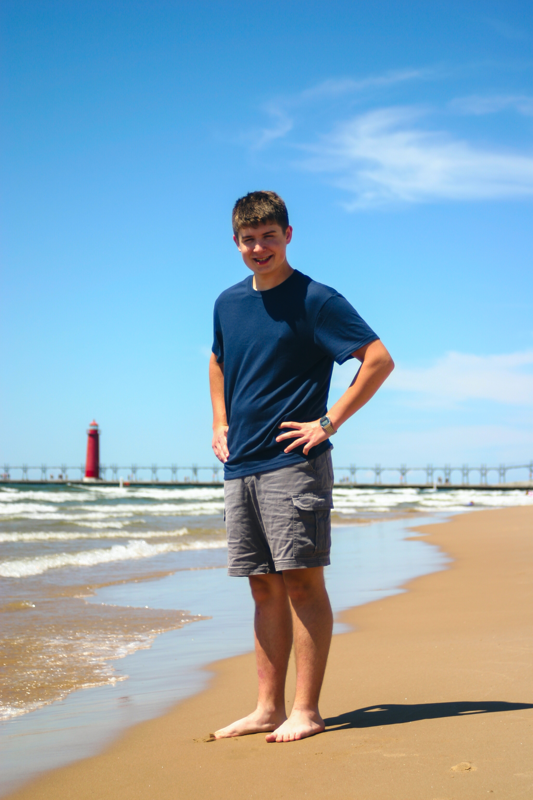
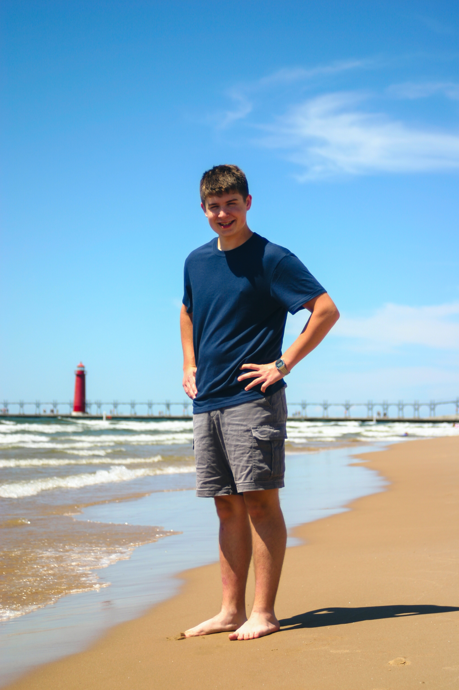
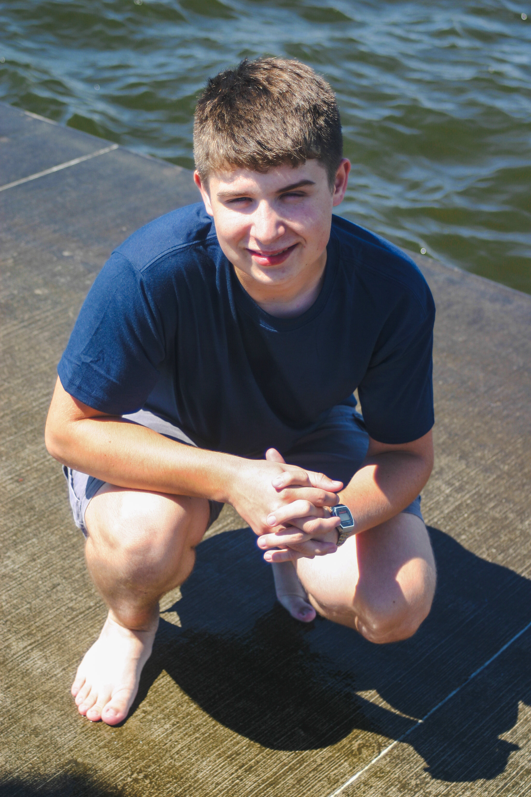
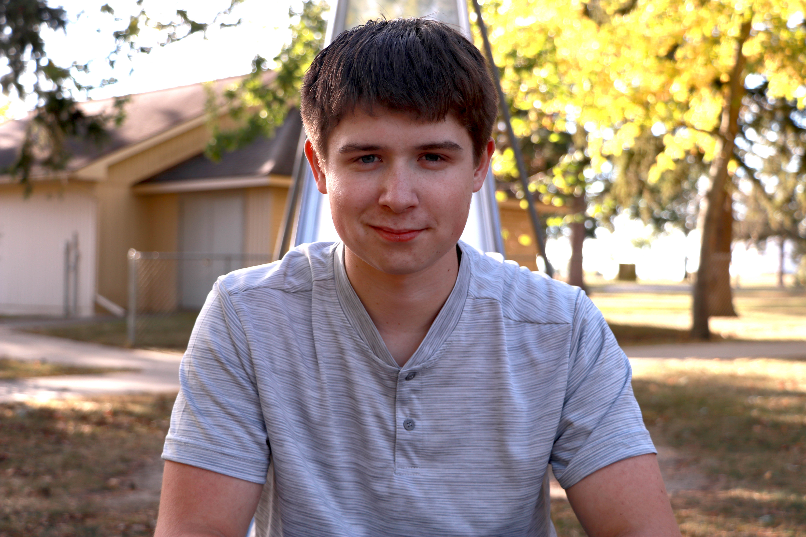
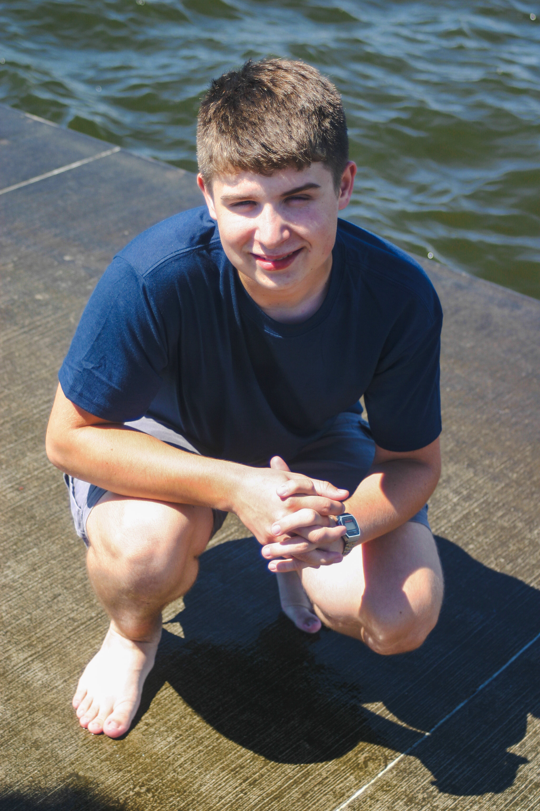
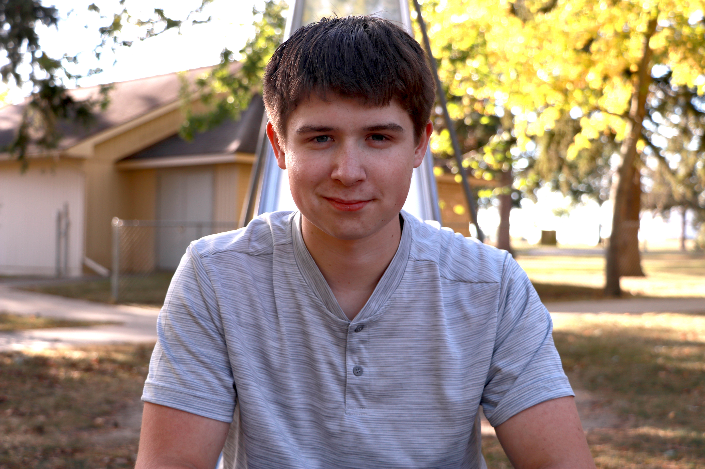

08 & 10/2024
SENIOR PICTURES

CLIENT: My brother, Jason Hanses
These are some of the photos I took of my brother for his senior year of high school. I shot them with Canon DSLR cameras and edited them in Adobe Photoshop and Lightroom.
With these portraits, I used the rule of thirds to strengthen the compositions. I also used a shallow depth of field to blur out the background and bring attention to the subject. I experimented with different camera angles during these photoshoots. Since some of them were shot too dark and underexposed, I used Photoshop to adjust the levels and contrast to create more eye-catching and clear images.
 

 


